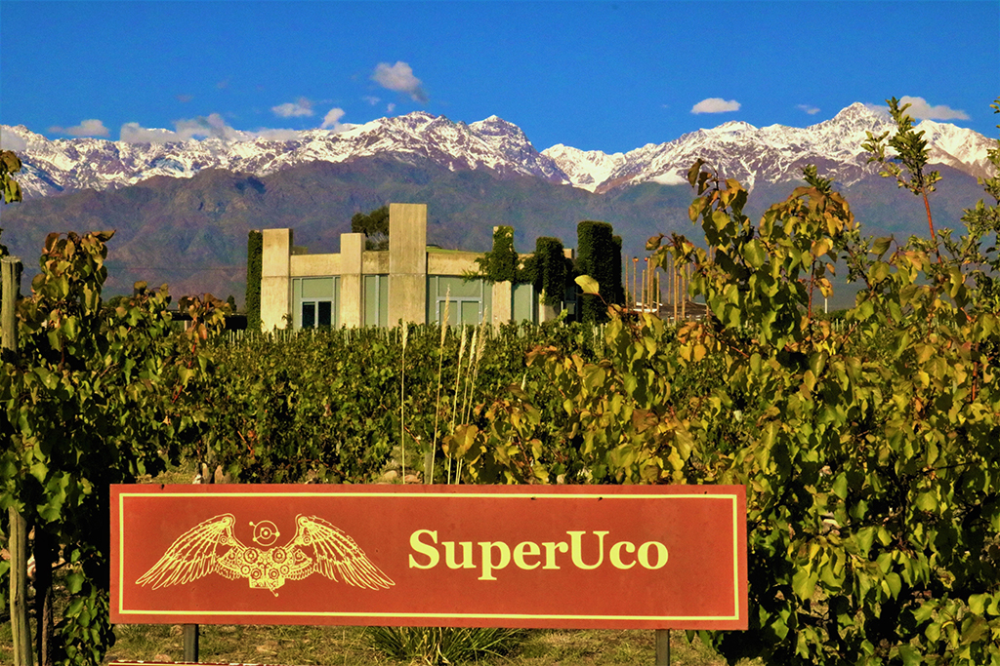
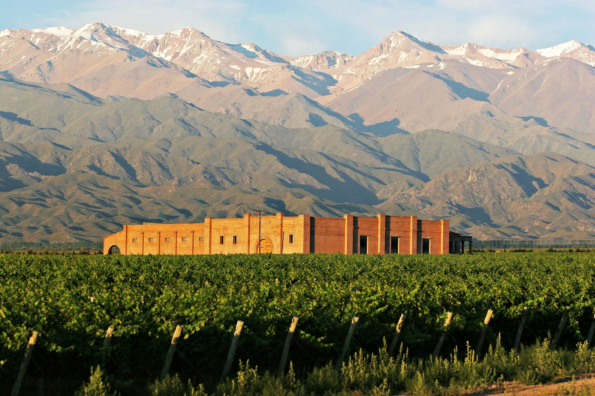
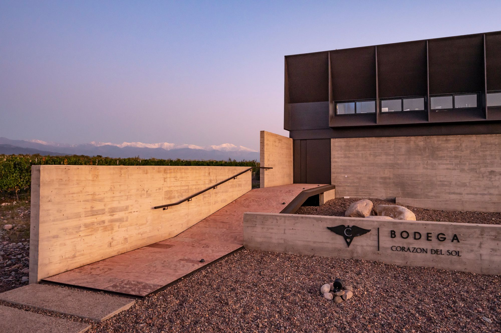
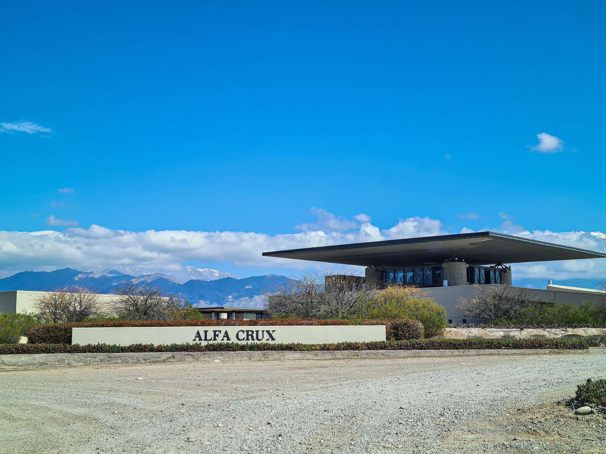
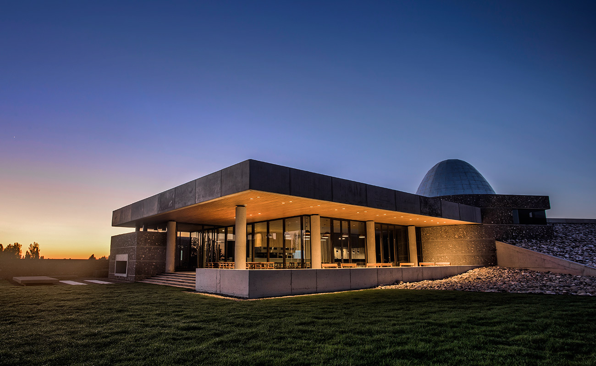

VALLE DE UCO

- Degustaciones
- Visitas guiadas
- Restaurant

- Restaurant
- Degustaciones
- Atardecer de montaña
- Clases de cocina
- Juego de blend

- Visitas
- Degustaciones
- Los Chacayes
- Valle de Uco
- Internacional
- Experiencias
- Reservas para grupos
- Degustaciones virtuales
- Degustaciones privadas
- Degustaciones en casa

- Degustaciones
- Visitas guiadas
- Restaurant

- Restaurant "Piedra Infinita"
- Visitas y degustaciones